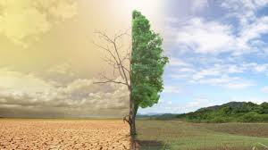
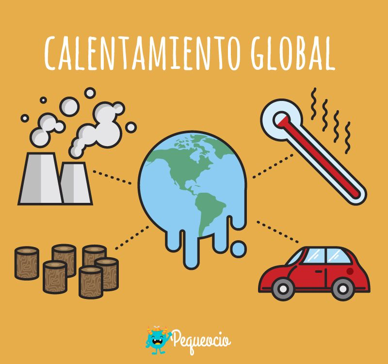
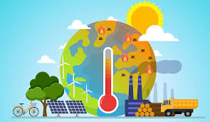

CALENTAMIENTO GLOBAL
El calentamiento global se refiere al aumento gradual de la temperatura
promedio de la Tierra, tanto en la superficie como en los océanos, durante
un período de tiempo prolongado. Este fenómeno se atribuye principalmente
a la acumulación de gases de efecto invernadero en la atmósfera, como
el dióxido de carbono (CO2), el metano (CH4), el óxido nitroso (N2O) y el
vapor de agua. Estos gases atrapan el calor del sol en la atmósfera,
lo que provoca un aumento en la temperatura global.

¿Que debo hacer para evitar el calentamiento global?
Reducir las emisiones de gases de efecto invernadero
Reduce tu huella de carbono disminuyendo el
consumo de combustibles fósiles. Utiliza formas de transporte más sostenibles como caminar, andar en
bicicleta o usar el transporte público. Además, considera la posibilidad de usar vehículos eléctricos o híbridos.
Ahorrar energia
Adopta prácticas que reduzcan el consumo de energía en tu hogar y en tu lugar de trabajo.
Esto incluye apagar los dispositivos electrónicos cuando no estén en uso, utilizar bombillas de bajo consumo
energético, mejorar el aislamiento de tu hogar y utilizar electrodomésticos eficientes en términos energéticos.
Fomentar la energía renovable
Considera instalar paneles solares o utilizar otras formas de energía renovable en tu hogar si es posible
políticas y proyectos que promuevan el uso de energías limpias a nivel local, nacional e internacional.
Reducir el desperdicio
Reduce, reutiliza y recicla. Consumir de manera responsable y evitar el desperdicio de alimentos y otros
recursos puede ayudar a reducir las emisiones de gases de efecto invernadero asociadas con la producción y
eliminación de productos.
Apoyar prácticas agrícolas sostenibles
Opta por alimentos producidos de manera sostenible y local siempre que sea posible. Las prácticas agrícolas
sostenibles pueden ayudar a reducir las emisiones de gases de efecto invernadero asociadas con la agricultura
intensiva
Promover políticas ambientales
Apoya políticas gubernamentales que aborden el cambio climático y promuevan la transición hacia una economía baja
en carbono. Participa en el proceso político y presiona a los líderes para que tomen medidas concretas contra
el calentamiento global.

Clasificacion del calentamiento global
el calentamiento global antropogenico es el mas precupante, ya que es causado principalmente
por las actividades humanas.otro tipo de calentamiento global es el polar,quese refiere
al aumento de la temperatura en las regiones polares,como el pretetico y la artartida
